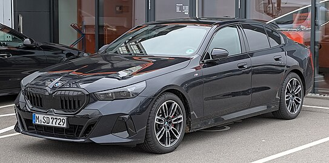

Bayerische Motoren Werke AG, trading as BMW Group (commonly abbreviated to BMW (German pronunciation: [ˌbeːʔɛmˈveː] ⓘ), sometimes anglicised as Bavarian Motor Works), is a German multinational manufacturer of luxury vehicles and motorcycles headquartered in Munich, Bavaria, Germany. The company was founded in 1916 as a manufacturer of aircraft engines, which it produced from 1917 to 1918 and again from 1933 to 1945 creating engines for aircraft that were used in the Second World War.The circular blue and white BMW logo or roundel evolved from the circular Rapp Motorenwerke company logo, which featured a black ring bearing the company name surrounding the company logo, an image of a horse head on a plinth. BMW retained Rapp's black ring inscribed with the company name, but the interior of the ring is quartered blue and white, reminiscent of the coat of arms and flag of Bavaria (which in turn are based on the arms of the historic House of Wittelsbach, which ruled Bavaria for many centuries). The logo does not bear the distinctive lozenge shape found on the coat of arms, however, as local laws at the time it was introduced forbade the use of state coats of arms on commercial logos.BMW began production of motorcycle engines and then motorcycles after World War I. Its motorcycle brand is now known as BMW Motorrad. Their first successful motorcycle after the failed Helios and Flink, was the "R32" in 1923, though production originally began in 1921. This had a "boxer" twin engine, in which a cylinder projects into the air-flow from each side of the machine. Apart from their single-cylinder models (basically to the same pattern), all their motorcycles used this distinctive layout until the early 1980s. Many BMW's are still produced in this layout, which is designated the R Series.BMW is headquartered in Munich and produces motor vehicles in Germany, the United Kingdom, the United States, Brazil, Mexico, South Africa, India, China, and previously also in the Netherlands (ceased in 2023).[6] The Quandt family [de] is a long-term shareholder of the company, following investments by the brothers Herbert and Harald Quandt in 1959 that saved BMW from bankruptcy, with the remaining shares owned by the public.The first modern mass-produced turbocharged petrol engine was introduced in 2006 (from 1973 to 1975, BMW built 1,672 units of a turbocharged BMW M10 engine for the BMW 02 Series),[17] with most engines switching over to turbocharging over the 2010s. The first hybrid BMW was the 2010 BMW ActiveHybrid 7, and BMW's first mass-production electric car was the BMW i3 city car, which was released in 2013, (from 1968 to 1972, BMW built two battery-electric BMW 1602 Elektro saloons for the 1972 Olympic Games).[18] After many years of establishing a reputation for sporting rear-wheel drive cars, BMW's first front-wheel drive car was the 2014 BMW 2 Series Active Tourer multi-purpose vehicle (MPV).
|
||||
|---|---|---|---|---|
|  |